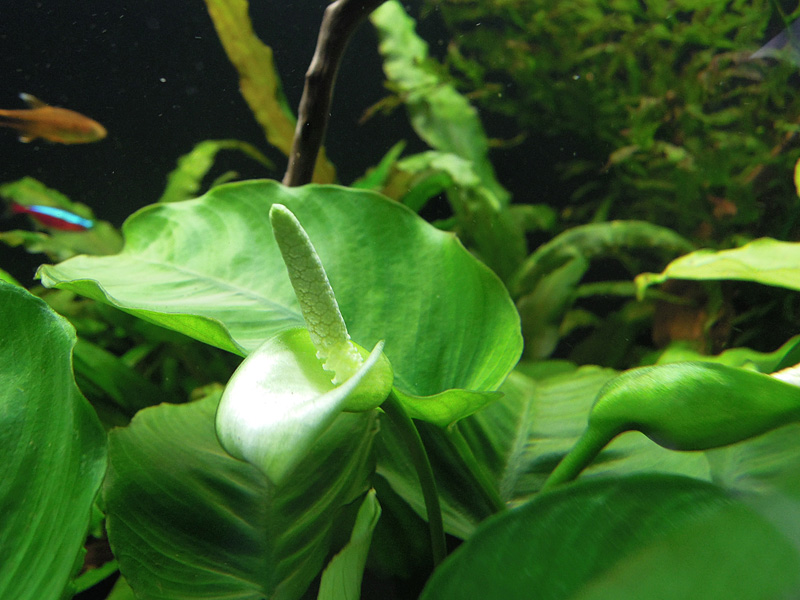

L'obiettivo di questa guida è creare una raccolta delle informazioni su diverse specie di piante acquatiche.
Anubias è un genere di piante acquatiche appartenente alla famiglia delle Araceae. Sono note per la loro resistenza e per la capacità di crescere in condizioni di illuminazione variabile.
In natura crescono principalmente in fiumi e torrenti, ma si possono trovare anche nelle paludi. Sono caratterizzati da foglie larghe e spesse che si presentano in molte forme diverse.
